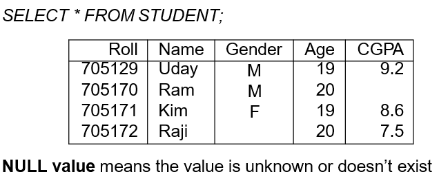

- SELECT
- Its used to retrieve data from the underlying table
- Syntax:select column1,column2 from table_name;
- Note: if user wants to select all the columns then "*" can be used

- >SELECTDISTICT
- Its used to retrieve unique data from the underlying table
Syntax:select distinct column1,column2 from table_name;
- >SELECTEXPR
- Its used to display mathematically calculated data
Syntax:select column, expression from table_name;

- >SELECTALIAS
- Its used to rename a table's columns for the purpose of a particular SQL query.
Syntax:select column,clumn2 "New_Name",from table_name;

- >SELECTCONCAT
- It joins a column or a character string to another column.
Syntax:select col1||''||col2 from table_name;

- >SELECTWHERE
- Specific records can be selected by using WHERE clause.
Syntax:select col1 from table_name where condn;


- >SELECTORDER BY
- It is used to sort record in tables.
Syntax:select col1fromtable_name [where condn] order by[asc/desc];